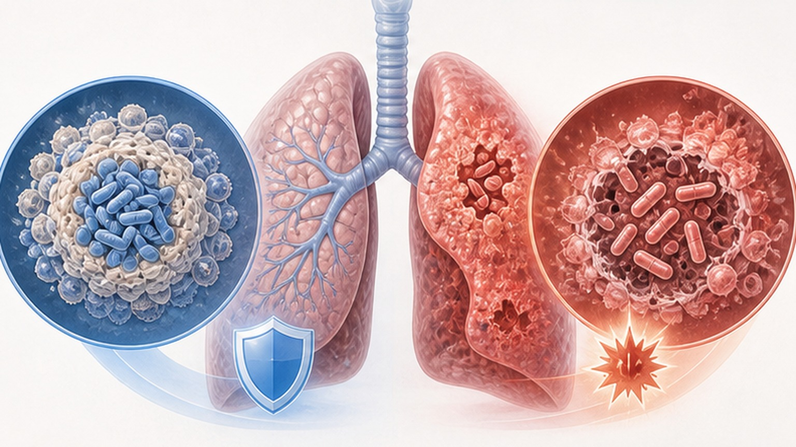
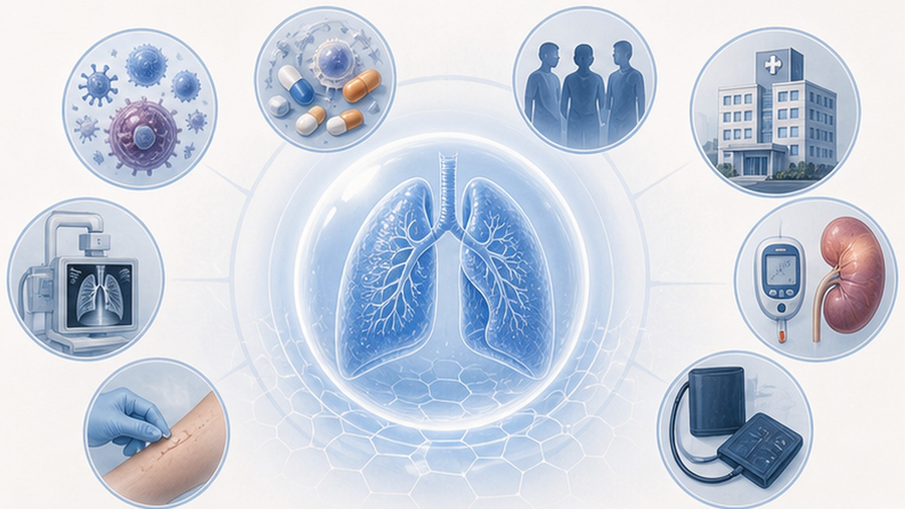
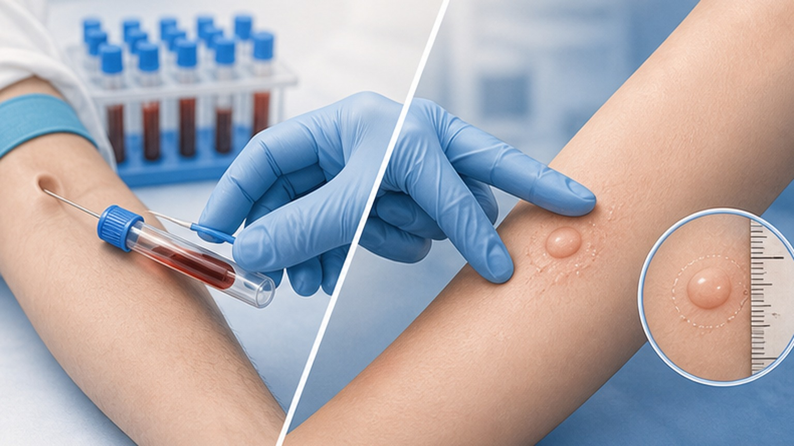
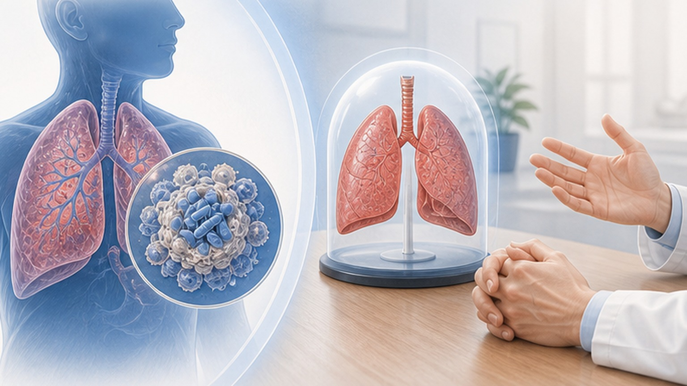

잠복결핵감염 (Latent Tuberculosis Infection, LTBI) — 결핵균이 몸 안에 있지만 활동하지 않는 상태와 IGRA 검사의 의미
잠복결핵감염 (LTBI) 은 흔하지만 대부분은 평생 결핵으로 발병하지 않습니다
결핵균은 몸 안에 있지만 활동하지 않고 잠들어 있는 상태
결핵균에 감염은 되었지만 균이 활동하지 않아 증상도 없고 전염력도 없는 상태입니다 — 병이 아닌 '감염 상태'입니다.
우리 몸의 면역세포가 결핵균을 가둬 둔 상태라고 보면 됩니다. 균은 살아 있지만 깨어나지 못해 증상을 일으키지 않고, 기침이나 가래를 통해 다른 사람에게 옮기지도 않습니다. 흉부 X-ray와 객담 검사도 정상으로 나옵니다. 다만 면역이 약해지면 균이 다시 깨어나 활성 결핵이 될 수 있어, 위험군은 사전에 평가하고 관리합니다.
증상·전염력·검사·치료 면에서 완전히 다른 두 상태입니다

활성 결핵 환자의 호흡기 분비물 — 흡입 후 면역 반응에 따라 갈래가 갈립니다
활성 결핵 환자의 기침·재채기·대화로 공기 중에 퍼진 결핵균을 들이마시면 폐포에 도달하여 면역세포와 만납니다.
결핵균은 음식·악수·식기·수건으로는 전염되지 않습니다. 오직 활성 결핵 환자가 배출한 공기 중 비말핵을 흡입할 때만 가능합니다. 결핵균이 폐로 들어와도 면역이 정상이면 약 90% 이상이 잠복상태로 진행하여 평생 증상 없이 지나가고, 약 5–10% 정도만 평생에 걸쳐 활성 결핵으로 발병합니다.
감염 후 활성 결핵으로 진행할 위험이 높은 분들 — 미리 발견하면 예방이 가능합니다

한국에서는 BCG 접종률이 높아 IGRA 검사가 표준으로 자리잡았습니다

양성·음성·판정 불가 — 결과는 다음 단계 의사 결정의 시작점입니다
검사 결과지를 받으셨다면 한 번씩 떠올리시는 궁금증을 정리했습니다

IGRA 검사 결과에 따라 어떤 절차를 거치게 되는지 미리 알아둡니다
잠복결핵 (LTBI) 의 의미와 IGRA 검사의 핵심을 한 번 더 정리합니다
잠복결핵에 대해 궁금한 점은 언제든 문의해 주세요 — 함께 결정하겠습니다